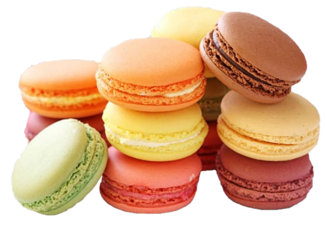

Fırından yeni çıkmış bir pizza kokusu... Dilimler arasından aşağı sarkan uzadıkça uzayan mozzarella peyniri ve kızarmış sucuk dilimleri altında kendini gösteren kekik kokulu domates sosu. Sucuklu pizzanın güzelliğini anlatmak için yeter de artar.
Sucuklu pizza tarifine ilave peynir ve şarküteri çeşidi ekleyecekleri de tutmuyoruz. Afiyet olsun.
Hamburger
Özel sosu, karamelize soğanı ev yapımı hamburger ekmeği ve asla kuru olmayan muhteşem köftesi ile sofranıza bol yıldızlar yağdırıyorum 🌟.
Ekmek ve köfteleri daha küçük hazırlayıp daha fazla hamburger yapabilirsiniz.

Macaron
Renkli ve çeşitli aromalara sahip bu Fransız tatlısı, birçok kişinin favorisi haline gelmiştir. Hem görsel olarak çekici olmaları hem de çeşitli lezzet kombinasyonları sunmaları, macaronları popüler kılan faktörler arasındadır
Ben Kimim?
Merhaba, ben Soner! Mutfakta geçirdiğim yıllar boyunca lezzetin büyülü dünyasına duyduğum tutku, beni yemek sanatında ustalaşmaya yönlendirdi. Her bir tabağı bir hikaye gibi anlatma arzusuyla hareket ediyorum ve bu tutkum, yemeklerimi hazırlarken benimle birlikte sofranın tadını çıkaran herkesi etkiliyor.
Mutfakta geçirdiğim her an, benim için bir öğrenme ve keşif süreci olmuştur. Bu yolculukta elde ettiğim deneyim ve bilgiyi, sizinle paylaşarak lezzet dolu bir sofra deneyimi yaşatmayı amaçlıyorum. Gelin, birlikte yemek masasında unutulmaz anılar biriktirelim!